It's one small step for a marble - one giant leap into madness
Hello and welcome to the help file of Bulletbyte Marbles. This file will provide you with some basic information about the game, controls of the game and it's levels. Additionally you will find some hints about how to make it through the various levels.Content:
the Game
"Bulletbyte Marbles" is "a game inspired by Marble Madness". I have written it in September 2007 to get used to the Irrlicht 3D engine and the ODE game physics engine. I release this game as "giftware", i.e. you can do anything you want to with it, play it, have a look at the sources and redistribute it however you want, but therefore I do not take any responsibility for usage of the game. Use it at your own risk!.The game has 2 play modes:
- Play: just try to get through the level as fast as possible, but you can use any time you want.
- Challenge: you are fighting against the best time yet scored (or against an initial time if no time was scored yet) in the level.
Controls
The game is completely controlled by mouse. If you move the mouse you can add a torque to the marble. If you push the right mouse button and move the mouse the position of the camera will be changed. Use the mouse wheel to adjust the distance from the camera to the marble. Using the left mouse button will focus on the next checkpoint. You have to reach all checkpoints and you have to reach them in the right order.the Levels
The following section gives you an overview over the levels of the game and some hints on how to finish them.Level 1: "Beginner's First"
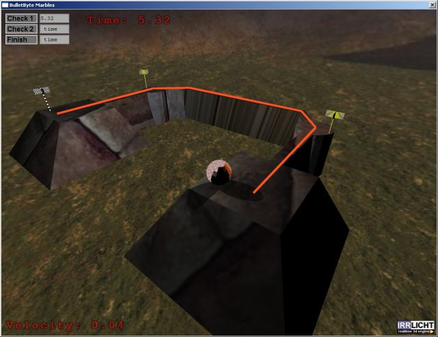This is an easy level. Just follow the path marked in orange in the image above, touch both checkpoints any you will easily reach the finish.
Level 2: "Classic 1"
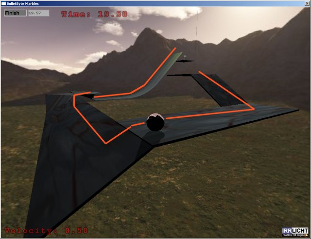This is another simple level. Just follow the orange path again and you're done.
Level 3: "Classic 2"
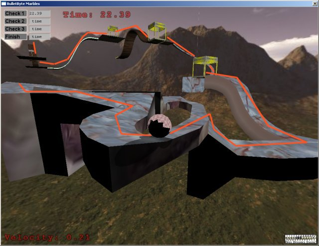This time it isn't that easy any more. After starting the level you must take control at once or your marble will drop into a hole right under the starting point. The next part is easy, but the first little jump should be done with care. Make sure you are not jumping down too fast or you will not recover control before falling off the level. The way from checkpoint 1 to checkpoint 2 is pretty easy, but you must take care to stay on that narrow path. When you have reached the second checkpoint you get on a wooden hill with a jumppad after the hill that will push you up to checkpoint 3. Make sure you are not going on that jumppad too fast or it will just knock you under the plane with the checkpoint on. After checkpoint 3 you go down a hill covered with ice so you should really take a good aim. The rest is easy: move over the second hill and touch the finishing flag.
Level 4: "Advanced 1"
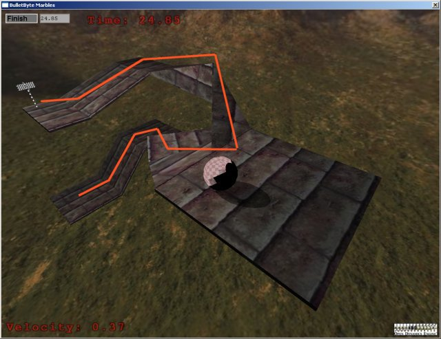Despite it's name this level is simple again. Just follow the orange path to the finish and you're done.
Level 5: "Advanced 2"
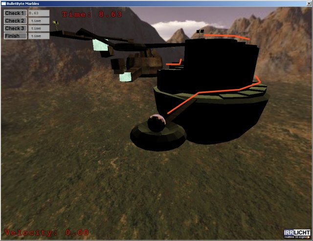In this level you must first roll over a pretty small bridge and get up some stairs. You should not try to get up there too fast or you might lose control over your marble.
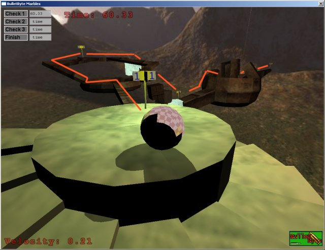
Now you must get over the next narrow bridge with a torous in the middle. Be careful there. After reaching the second checkpoint you go down the boxes that lead you to checkpoint 3. After this one you must climb up an almost vertical wall (this can be done ... you just have to touch the wall without moving and start to move again) which leads you to a maze that is badly lit. After that it's just a small step to finish.
Level 6: "Upstairs"
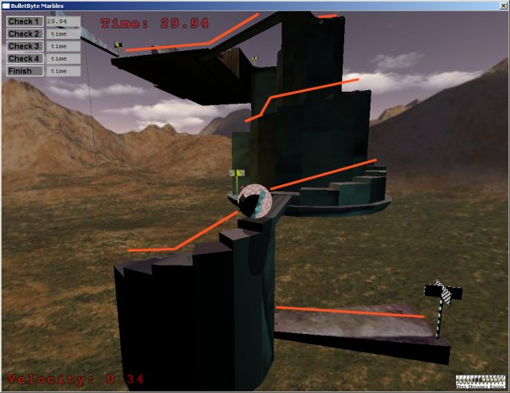This level will bring you to quite a lot of stairs. Climb up all of them but don't forget - if you get too fast you will lose control over your marble.
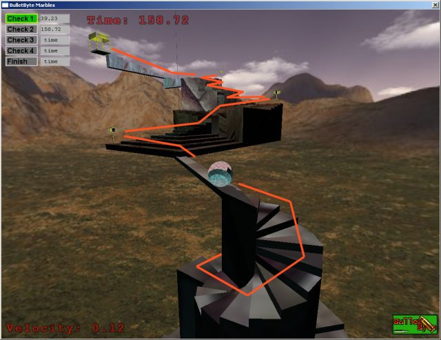
Level 7: "Downstairs"
This level is the same as in "Upstairs", just the other way round. You will notice that losing control is even simpler when going down the stairs.Level 8: "Stunt Marble Racer 1"
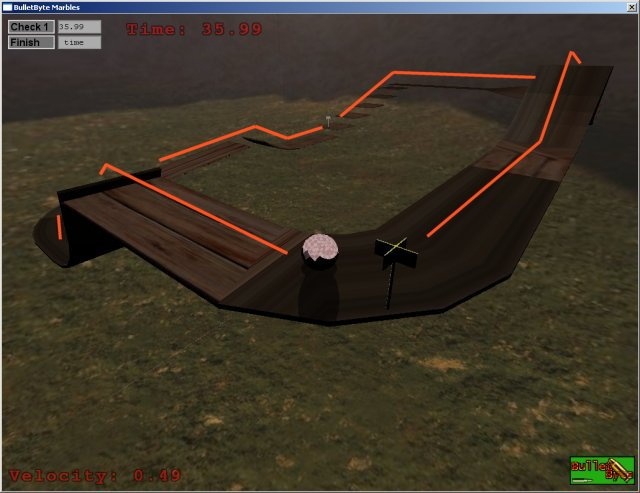The next three levels are inspired by another one of my favorite 80ies games: Stunt Car Racer. In the first one you have a jump in the beginning. You must find the right speed for that jump so you don't fall off the track and you regain control before the next corner. After that a small jump leads you to the only checkpoint in the level. After this corner you must accelerate to the right speed so you can take the next jump without falling off. After that jump a steep turn waits for you which will lead you to some steps before the finishing flag.
Level 9: "Stunt Marble Racer 2"
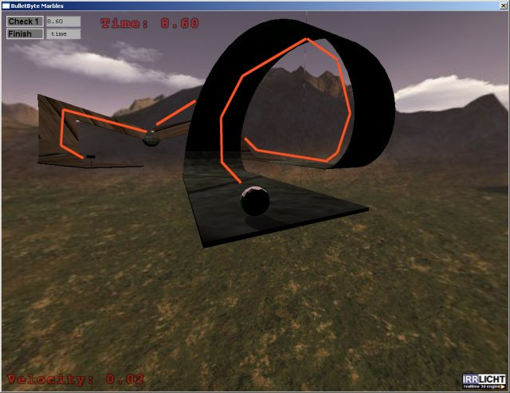OK, this one is pretty hard. Going through the loop is pretty hard, because once you are upside down the left/right controls flip, i.e. moving the mouse left will move your marble right once you are upside down. Even after the loop this level is no fun. You must get up to the checkpoint but because of bad level design this is also really hard. After the checkpoint it's a simple level.
Level 10: "Stunt Marble Racer 3"
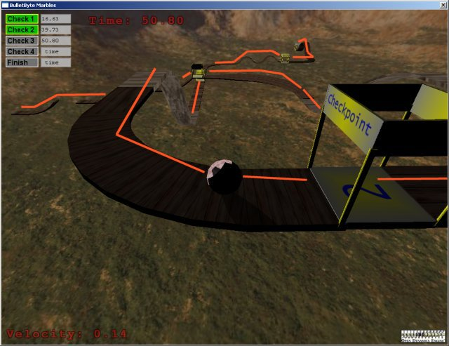I like this level. Play it most of the time. There are two small jumps at the beginning, it turned out that it is easier to stop the marble before the second jump. Then you just have to follow the path to get to checkpoints one, two and three. The way to checkpoint four is equipped with two doulbe jumps which need the right speed (again) or you will either fall of the track or lose a lot of time. After checkpoint four just go through the last corner and over the last hill (not too fast!!) and you will jump right into finish.
Level 11: "Push and Ice"
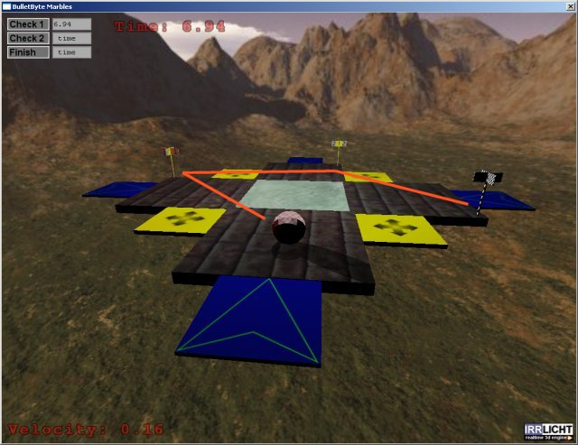Another simple level. It was just itended to test ice, jumppads and acceleration pads, so it's really simple. But I wouldn't go on the jumppads, it's easier to go over the ice plane.
Level 12: "a World of Ice"
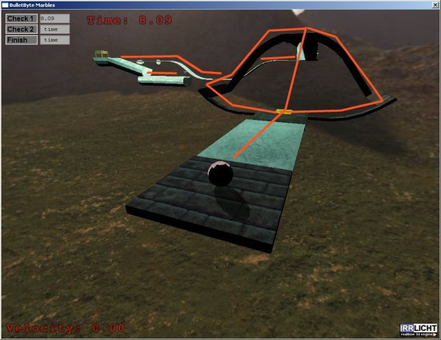This level gives you some options: in order to get up on the higher plane you can either use the jumppad or on of the two no-jump paths. After that you will see some icy ways to go, but it's not that hard. Except for the way from the second checkpoint to the finish. You have an acceleration pad right after the checkpoint and it's not so easy to keep the marble on the right way to the finishing flag.
Level 13: "3 jump"
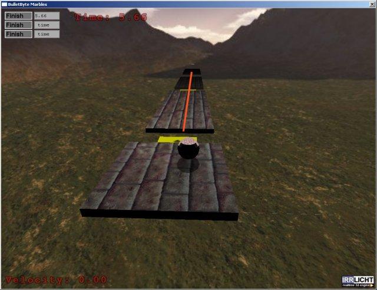Not so hard. Just figure out how fast you have to be to get on the next plane. The second and the third planes are checkpoints in this level so it's enough to just touch them, but jumping to the finishing flag requires some better aiming.